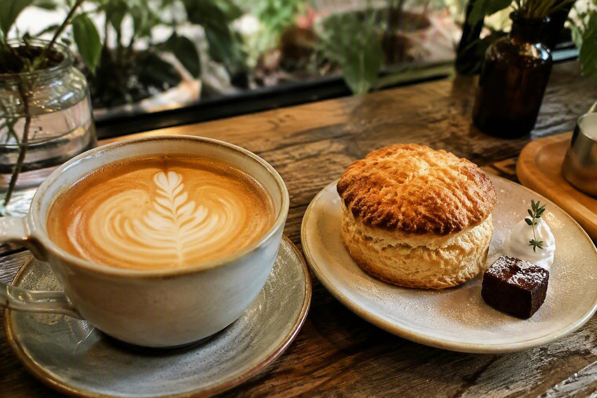
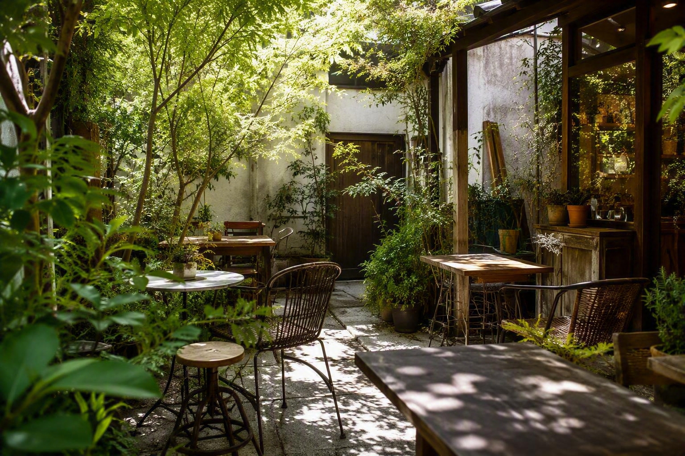
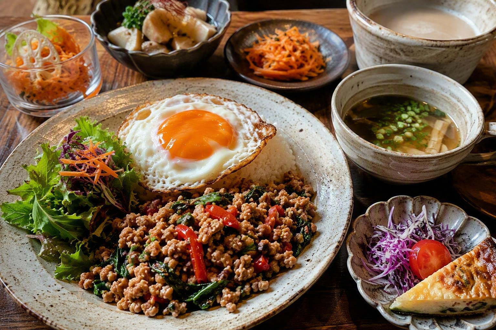
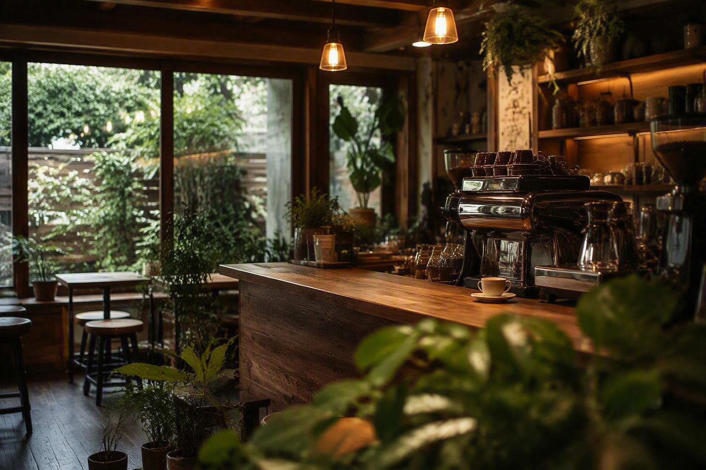

FOOD & LUNCH
温かな一皿
ガパオライスをはじめ、週替わりランチや軽食を。

Cafe DROPは、浜松・布橋にある小さなカフェ。シアトルスタイルのラテと多彩なコーヒー、多国籍なランチ、植物に囲まれた空間で、思い思いの時間をお過ごしください。
エスプレッソを軸に、シアトルスタイルのラテや多彩なコーヒーをご用意。ミルクの甘み、豆の香り、心地よい余韻を、その日の気分に合わせて。


〒432-8012
静岡県浜松市中央区布橋2丁目4-4
11:30–22:00 / 木曜定休
TEL053-479-5109